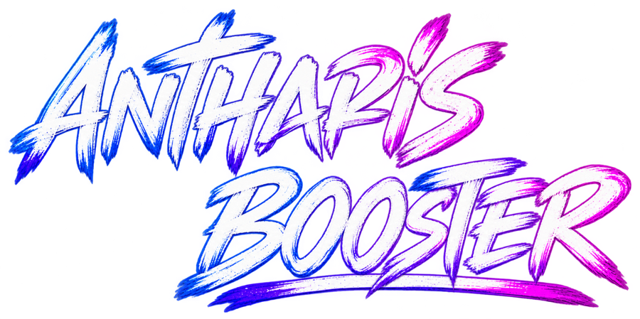

ANTHARISBOOSTER
antharisstore.com

Mais controle, desempenho e praticidade para o seu PC.
Otimizador para Windows da Antharis Store: ajustes de desempenho, limpeza, controle do processador e da memória, temperaturas em tempo real e testes de hardware, tudo num só lugar.
Windows 10 e 11 (64 bits) · sempre a versão mais recente ·
O que ele faz
Otimização com um cliqueModo gamer, ajustes do Windows, rede, mouse e teclado. Tudo pode ser desfeito na Central de restauração.
Temperaturas detalhadasCPU, placa de vídeo, memória e discos em tempo real, com uso, clock, consumo e dicas quando esquenta.
Limpeza e memóriaLimpa arquivos inúteis, mostra o que ocupa espaço no disco e libera a RAM automaticamente.
Medidor de FPS e testesOverlay de FPS nos jogos, teste de estresse, teste de internet e relatório completo do PC.
Como instalar
Baixe o instaladorClique em “Baixar para Windows” e abra o arquivo AntharisBooster-Setup.exe.
InstaleSe o Windows mostrar um aviso azul, clique em “Mais informações” e depois em “Executar assim mesmo”.
Ative a sua keyCole a key que você comprou na Antharis Store ou entre com a sua conta. O app se atualiza sozinho depois.